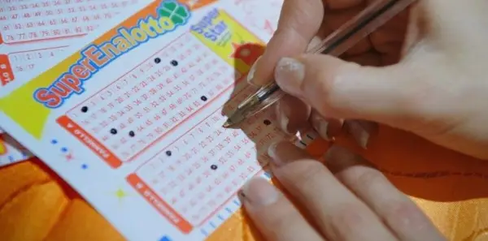
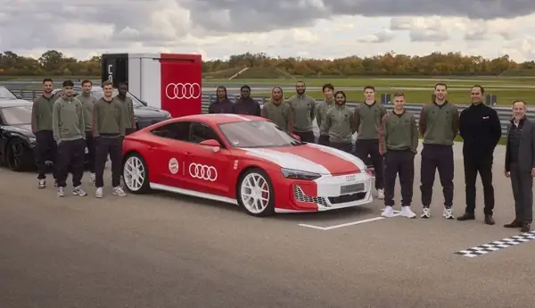
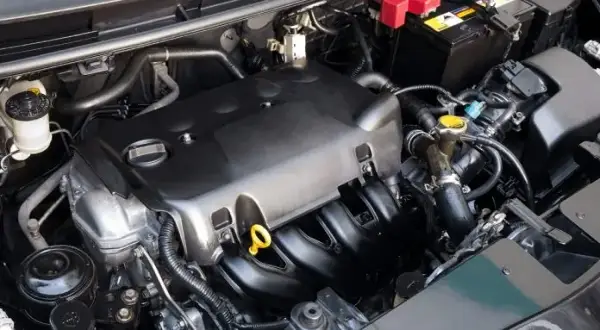
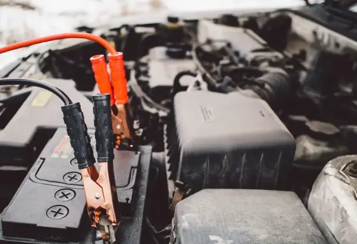

Day.mk - Најнови Вести (Страница 357)
Над 1,2 милијарди луѓе го користат „Чет-ГПТ“ неделно
Опен-АИ“ денеска во употреба го пушти и новиот ВИ-модел „ГПТ-6.
Зошто е добро да се „преспие“ проблемот? Науката го има одговорот
Симптомите на одговорот „бори се или бегај“ на мозокот се засилени бидејќи делот од мозокот одговорен за гледање на целосната слика има потешкотии да ја контролира ситуацијата“,...
„Шкода“ повлекува 1,7 милиони возила ширум светот поради ризик од дефект на управувачот
Фолксваген“ во соопштение наведе дека при интерни проверки на квалитетот бил утврден можен проблем со управувачот кај одредени возила од различни серии на модели.
Истражување: 10 професии што најчесто водат кон развод
Возачи на автобус – 47,8 отсто Возачите на автобуси имаат стапка на разводи од 47,8 отсто.
Кибернападите ќе бидат еден од најголемите ризици од вештачката интелигенција во 2027 година, предупредува Бил Гејтс објави Медиасет.мк
Гејтс предупредува дека спојувањето на овие криминални активности со напредните можности на вештачката интелигенција може дополнително да го зголеми ризикот.

Германец во последен момент уплатил ливче и освоил 120 милиони евра на лотарија
Колкава е добивката покажува и пресметката на „Лото24“: доколку 120-те милиони евра би му биле исплатени во банкноти од по 100 евра, парите не би можеле да се сместат ниту во 24...
Паметните очила можат тајно да снимаат луѓе: ЕУ бара јасни предупредувања за снимањето
Од Агенцијата за заштита на личните податоци (АЗЛП) информираа дека документот претставува првичен сет насоки наменети за корисниците, производителите и давателите на услуги пов...

Фудбалерите на Баерн добија нови Audi возила, многумина се одлучија за електрични верзии
Играчите можеа да избираат од широк спектар на целосно електрични и хибридни модели.

Дизел моторите умираат, а Toyota веќе ја избра неговата замена
предвидува дека по 2030 година водородот ќе ја замени дизел технологијата.

Како да препознаете дека акумулаторот ви слабее?
Секако, секогаш можете да го проверите акумулаторот со волтметар, но тоа не е дел од алатките и уредите во секое просечно домаќинство.
Најнови Вести